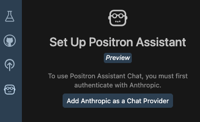
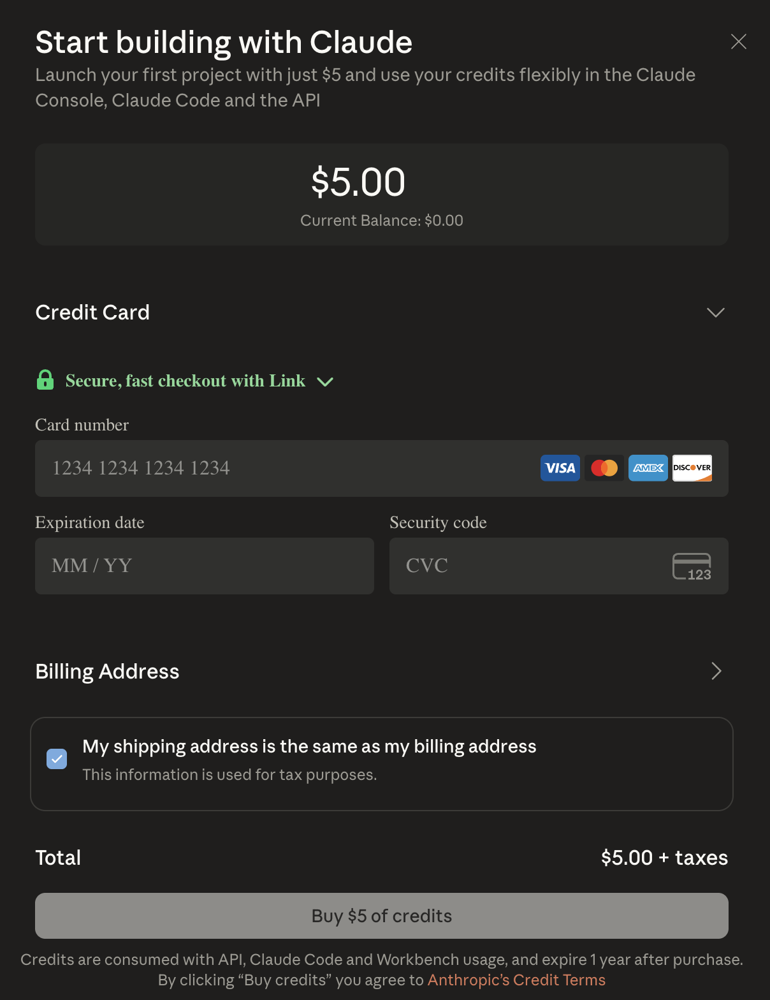
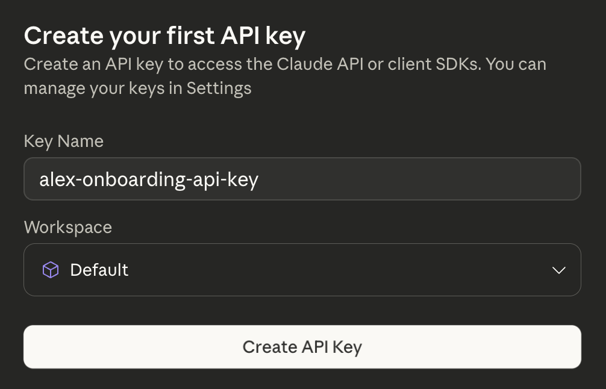
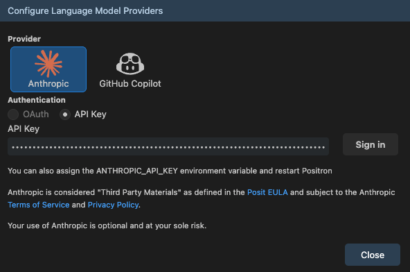
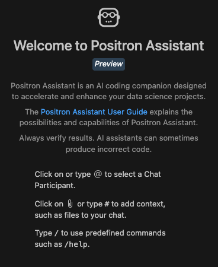
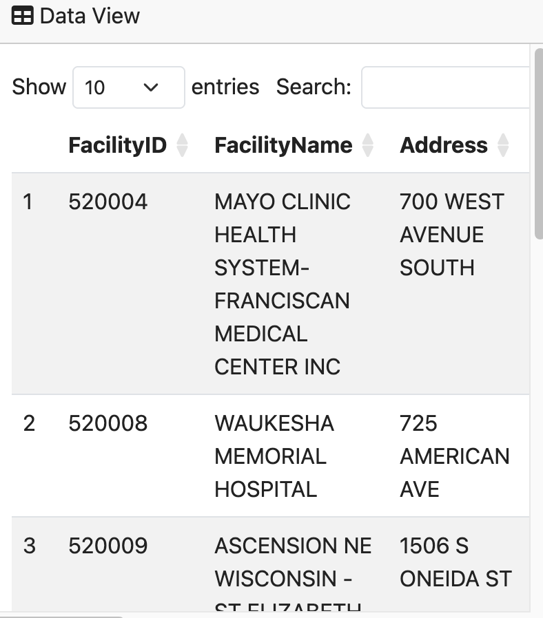
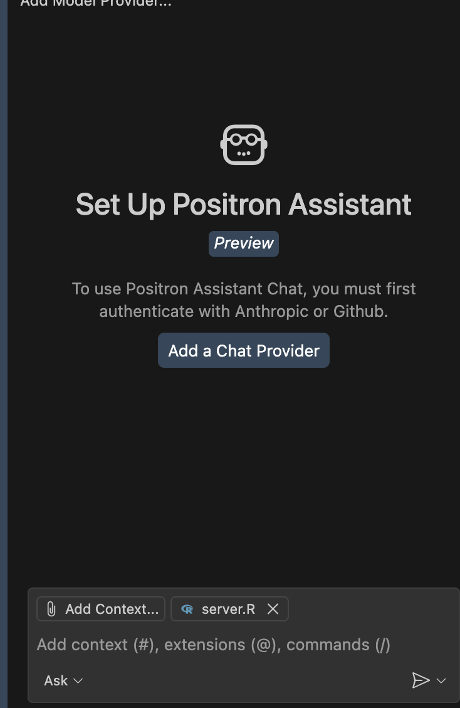
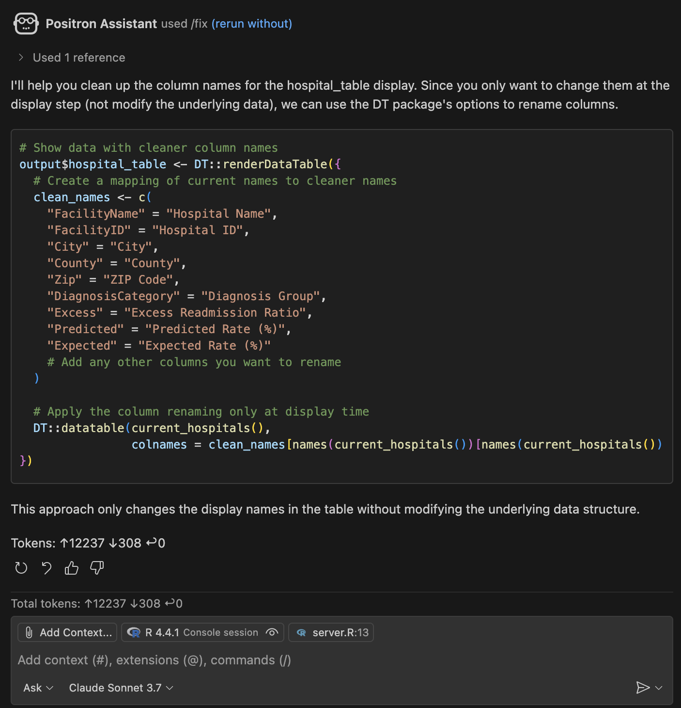
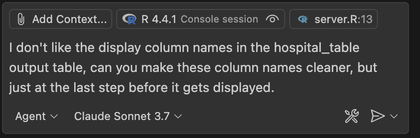
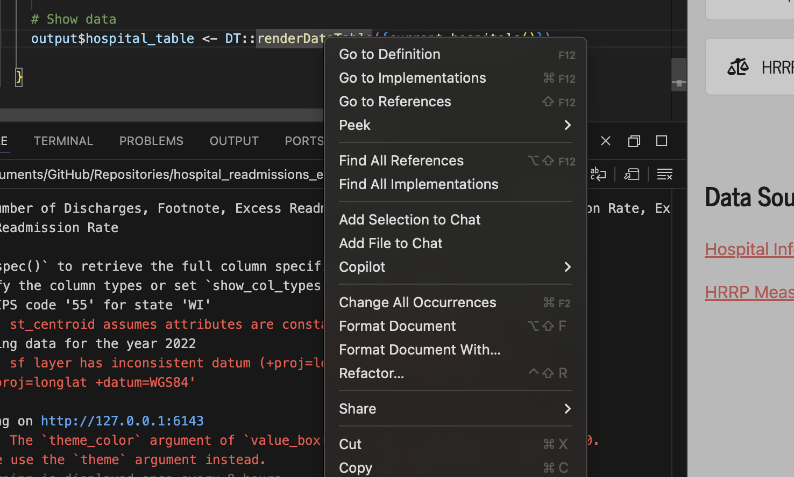

The ultimate setup for using an AI-companion for data science development.
Author
Alex Zajichek
Published
October 29, 2025
This article builds off a prior post that demos how to integrate LLM-powered components into a Shiny application.
The new Positron IDE is amazing for doing and developing data science output/workflows. Although I’ll always love RStudio, I’m making the full-time switch to Positron because it’s the future of how data science work should be done, and the AI capabilities being built in is a big part of that.
In a prior post I showed how to use packages like ellmer and querychat to integrate LLM’s into a Shiny web application. Now I’m just starting to get the “AI stuff” started in Positron, so with that same app wanted to add a few features to get a sense of how it all works while using Positron Assistant for help.
Setup
To get Positron Assitant setup initially, I followed the steps here to get it configured, which amounted to updating Positron and enabling it in the settings (as the directions say).
Purchasing API credits
After configuration, I see the chat pane available in the left sidebar.

In order for it to work, I need to get an API key from Anthropic (though as mentioned in a recent webinar, more models will become supported). This means I need to purchase API credits for Claude, which I can do so on the platform here. When I click the Get API Key button, it tells me to pay $5, so I just went ahead and did that.

Once I submitted, it prompted me to name my API key (which it was done by default).

Another thing I did was go into my Claude console and change the limit to a lower amount, because it defaulted to $100 per month. But I don’t actually know how much cost will be incurred by using this in Positron, so wanted to be safe.
Authenticating in Positron
Now that we have a key, we can supply it to Positron. I clicked the Add Anthropic as a Chat Provider button (see screenshot above).

I pasted my API key and it looks like we are set.

Supplying the code base
The code base we are going to be working with is located here (note that this commit was the last one before the changes in this article were made). It is a Shiny application exploring hospital readmissions that contains a toggle capability for the user to switch between “traditional” data filters and a natural language chat interface to interact with the data. In either case, the interactive map and visuals update accordingly:
I want Positron Assistant to interact directly with my code and make changes on my behalf with my supervision and approval. The actual feature I want to change is simple: in the bottom-right corner of the app there is a table from the DT package showing the hospitals currently being plotted on the map (just basically a list view of the map data).

Desired Change
The headers in the table have pretty ugly names, so I’d like the assistant to make those nicer.
Trying it out
With everything configured, I opened up the code base in a new Positron session. Note I had to re-authenticate my API key after closing Positron, and then I chose Claude Sonnet 3.7.
I know that server.R is where this change will need to be made because that is where my dynamic dataset is fed into the DT::renderDataTable function. So I opened that file as well as the Positron Assistant chat pane:

The one really cool thing already is the Add Context button on the bottom. This means that you can add various files that the AI should consider in context to the conversation you are about to have with it. In this case, server.R is already attached (because it’s open), so I can just talk about this file as if it already knows what is in there.
The prompt I’m using is as follows:
“I don’t like the display column names in the hospital_table output table, can you make these column names cleaner, but just at the last step before it gets displayed.”
It gave a pretty good response to start.

This was the code snippet it provided.
Code
# Show data with cleaner column namesoutput$hospital_table <- DT::renderDataTable({# Create a mapping of current names to cleaner names clean_names <-c("FacilityName"="Hospital Name","FacilityID"="Hospital ID","City"="City","County"="County","Zip"="ZIP Code","DiagnosisCategory"="Diagnosis Group","Excess"="Excess Readmission Ratio","Predicted"="Predicted Rate (%)","Expected"="Expected Rate (%)"# Add any other columns you want to rename )# Apply the column renaming only at display time DT::datatable(current_hospitals(), colnames = clean_names[names(current_hospitals())[names(current_hospitals()) %in%names(clean_names)]])})
Seems to basically give me what I want. I’d need to copy/paste into the code to enact the changes. This is because, if you notice in the bottom of the screenshot above, it is in Ask mode (one other useful thing to note is that after that one question I went back to my Claude console and saw my balance was $4.93, so that just costed me $0.07).
I changed it to Agent mode and tried again:

To no avail. I just basically got the same output in the chat (and charged another $0.08). So I guess I’ll have to mess with that a little more.
Inline prompting
Although it basically gave me what I wanted and I could easily update the code, I want to test the other way to interact with the LLM: inline prompting. You just hover over the line in your code you want ask specifically about, and then right click -> Copilot -> “Editor Inline Chat”.

Here I entered the same prompt again, and there it did what I initially wanted: actually edit the code itself.
The coolest part? You get a validation step built in where you can accept the changes that were made (and even run the result of the change before accepting), or revert and cancel what was done. This is how you should be interacting with AI + coding.
I reran my application after saving the changes it made (with no additional edits on my end). It worked perfect.
Now the app used AI for developing the code and the application itself uses AI while it is running for user interaction. Many ways to use it.
Analysis of the result
The really interesting/impressive part here is that I only used that one prompt and supplied the server.R file (and R environment). Yes it was a simple fix conceptually (i.e., just change the names of the columns). But I didn’t actually specify the column names explicitly in the place where the table is built within the code. They are implied by all the rest of the code and datasets that ship with the app. And it really only edited the columns that needed editing (which wasn’t all of them). So to be clear, it had to:
Connect the dots throughout the code base to infer what the current names of the columns in that table would actually be at the time the table is rendered
Determine (on its own) which of those current columns were not in a “nice” format (whatever that means, but it got it right)
Assign a new name to those columns that is in a “nice” format (which it did)
Place the correct code edits to make this happen in the right spot to effect the changes and not break the app (it ran fine).
This. Is. Impressive. I can imagine how powerful this would be if you used this with more than 1 prompt and for more than 10 minutes. Very fun times ahead.
Now I don’t think I’m really scratching the surface of what possibilities this brings to efficiently streamline data science workflows, assist in app development, and more. This was just the baseline integration of Positron Assitant and it’s already awesome. In this application, AI was now used for both development of the code, and in the live application itself. I didn’t even start trying to use DataBot yet, which is another add-on to Positron by Posit that will enable it to actually build analysis and explore your data with you. This, among other things, makes me very excited to be in this field.
Source Code
---title: "Trying AI-assisted development in the Positron IDE"description: "The ultimate setup for using an AI-companion for data science development."author: "Alex Zajichek"date: "10/29/2025"image: "feature.png"categories: - AI - Shiny - Web Applicationsformat: html: code-fold: true code-tools: true toc: true---_This article builds off a [prior post](https://www.zajichekstats.com/post/building-an-llm-powered-shiny-app-for-hospital-readmissions/) that demos how to integrate LLM-powered components into a [Shiny](https://shiny.posit.co/) application._The new [Positron IDE](https://positron.posit.co/) is amazing for doing and developing data science output/workflows. Although I'll always love [RStudio](https://posit.co/download/rstudio-desktop/), I'm making the full-time switch to Positron because it's the future of how data science work should be done, and the [AI capabilities](https://posit.co/products/ide/positron/) being built in is a big part of that. In a [prior post](https://www.zajichekstats.com/post/building-an-llm-powered-shiny-app-for-hospital-readmissions/) I showed how to use packages like [`ellmer`](https://ellmer.tidyverse.org/) and [`querychat`](https://posit-dev.github.io/querychat/) to integrate LLM's into a [Shiny](https://shiny.posit.co/) web application. Now I'm just starting to get the "AI stuff" started in [Positron](https://positron.posit.co/), so with that same app wanted to add a few features to get a sense of how it all works while using [Positron Assistant](https://positron.posit.co/assistant.html) for help.# SetupTo get [Positron Assitant](https://positron.posit.co/assistant.html) setup initially, I followed the steps [here](https://positron.posit.co/assistant.html) to get it configured, which amounted to [updating Positron](https://positron.posit.co/updating.html) and enabling it in the settings (as the directions say). ## Purchasing API creditsAfter configuration, I see the chat pane available in the left sidebar.In order for it to work, I need to get an API key from [Anthropic](https://www.anthropic.com/) (though as mentioned in a [recent webinar](https://www.youtube.com/watch?v=TrN-FMcOsOA), more models will become supported). This means I need to purchase API credits for [Claude](https://claude.ai/), which I can do so on the platform [here](https://platform.claude.com/dashboard). When I click the _Get API Key_ button, it tells me to pay $5, so I just went ahead and did that.Once I submitted, it prompted me to name my API key (which it was done by default).Another thing I did was go into my Claude console and change the [limit](https://platform.claude.com/settings/limits) to a lower amount, because it defaulted to $100 per month. But I don't actually know how much cost will be incurred by using this in Positron, so wanted to be safe.## Authenticating in PositronNow that we have a key, we can supply it to Positron. I clicked the _Add Anthropic as a Chat Provider_ button (see screenshot above).I pasted my API key and it looks like we are set.# Supplying the code base {#codebase}The code base we are going to be working with is located [here](https://github.com/centralstatz/hospital_readmissions_explorer) (note that [this commit](https://github.com/centralstatz/hospital_readmissions_explorer/commit/a0eec2e86664cf261dcd0b03e43ede78773c9e44) was the last one _before_ the changes in this article were made). It is a [Shiny](https://shiny.posit.co/) application exploring [hospital readmissions](https://www.zajichekstats.com/post/managing-the-readmission-risk-pool/) that contains a toggle capability for the user to switch between "traditional" data filters and a natural language chat interface to interact with the data. In either case, the interactive map and visuals update accordingly:There is also a video of how this was done:{{< video https://www.youtube.com/embed/YlLcxuAjgJw >}}The live application is located on [Posit Connect Cloud](https://connect.posit.cloud/)[here](https://0196f590-15b7-8b36-3010-eb5a0d8a6d94.share.connect.posit.cloud/).# What's the goal here then?I want Positron Assistant to interact directly with my code and make changes on my behalf _with my supervision and approval_. The actual feature I want to change is simple: in the bottom-right corner of [the app](https://0196f590-15b7-8b36-3010-eb5a0d8a6d94.share.connect.posit.cloud/) there is a table from the [`DT`](https://rstudio.github.io/DT/) package showing the hospitals currently being plotted on the map (just basically a list view of the map data).<br>## Desired ChangeThe headers in the table have pretty ugly names, so I'd like the assistant to make those nicer.# Trying it outWith everything configured, I opened up the [code base](#codebase) in a new Positron session. Note I had to re-authenticate my API key after closing Positron, and then I chose Claude Sonnet 3.7.I know that [`server.R`](https://github.com/centralstatz/hospital_readmissions_explorer/blob/main/server.R) is where this change will need to be made because that is where my dynamic dataset is fed into the [`DT::renderDataTable`](https://rstudio.github.io/DT/shiny.html) function. So I opened that file as well as the Positron Assistant chat pane:The one really cool thing already is the _Add Context_ button on the bottom. This means that you can add various files that the AI should consider in context to the conversation you are about to have with it. In this case, `server.R` is already attached (because it's open), so I can just talk about this file as if it already knows what is in there.The prompt I'm using is as follows:_"I don't like the display column names in the hospital_table output table, can you make these column names cleaner, but just at the last step before it gets displayed."_It gave a pretty good response to start.This was the code snippet it provided.```{r, eval = FALSE}# Show data with cleaner column namesoutput$hospital_table <- DT::renderDataTable({# Create a mapping of current names to cleaner names clean_names <-c("FacilityName"="Hospital Name","FacilityID"="Hospital ID","City"="City","County"="County","Zip"="ZIP Code","DiagnosisCategory"="Diagnosis Group","Excess"="Excess Readmission Ratio","Predicted"="Predicted Rate (%)","Expected"="Expected Rate (%)"# Add any other columns you want to rename )# Apply the column renaming only at display time DT::datatable(current_hospitals(), colnames = clean_names[names(current_hospitals())[names(current_hospitals()) %in%names(clean_names)]])})```Seems to basically give me what I want. I'd need to copy/paste into the code to enact the changes. This is because, if you notice in the bottom of the screenshot above, it is in _Ask_ mode (one other useful thing to note is that after that one question I went back to my Claude console and saw my balance was $4.93, so that just costed me $0.07).I changed it to _Agent_ mode and tried again:To no avail. I just basically got the same output in the chat (and charged another $0.08). So I guess I'll have to mess with that a little more.## Inline promptingAlthough it basically gave me what I wanted and I could easily update the code, I want to test the other way to interact with the LLM: inline prompting. You just hover over the line in your code you want ask specifically about, and then right click -> Copilot -> "Editor Inline Chat".Here I entered the same prompt again, and there it did what I initially wanted: actually edit the code itself.The coolest part? You get a **validation** step built in where you can accept the changes that were made (and even run the result of the change before accepting), or revert and cancel what was done. _This_ is how you should be interacting with AI + coding.I reran my application after saving the changes it made (with no additional edits on my end). It worked perfect.I then just [committed my code](https://github.com/centralstatz/hospital_readmissions_explorer/commit/876f157e8b717fa9729af744906b5c1283d2ce63) to [GitHub](https://github.com/) which in turn automatically updated the [live application](https://0196f590-15b7-8b36-3010-eb5a0d8a6d94.share.connect.posit.cloud/) on [Posit Connect Cloud](https://connect.posit.cloud/).Now the app used AI for developing the code _and_ the application itself uses AI while it is running for user interaction. Many ways to use it.# Analysis of the resultThe really interesting/impressive part here is that I only used that one prompt and supplied the `server.R` file (and R environment). Yes it was a simple fix conceptually (i.e., just change the names of the columns). But I didn't actually specify the column names explicitly in the place where the table is built within the code. They are implied by all the rest of the code and datasets that ship with the app. And it really only edited the columns that _needed_ editing (which wasn't all of them). So to be clear, it had to:1. Connect the dots throughout the code base to infer what the _current_ names of the columns in that table would actually be at the time the table is rendered2. Determine (on its own) which of those _current_ columns were not in a "nice" format (whatever that means, but it got it right)3. Assign a _new_ name to those columns that _is_ in a "nice" format (which it did)4. Place the correct code edits to make this happen in the right spot to effect the changes and not break the app (it ran fine).This. Is. Impressive. I can imagine how powerful this would be if you used this with more than 1 prompt and for more than 10 minutes. Very fun times ahead.<br>Now I don't think I'm really scratching the surface of what possibilities this brings to efficiently streamline data science workflows, assist in app development, and more. This was just the baseline integration of Positron Assitant and it's already awesome. In this application, AI was now used for both _development_ of the code, and in the live application itself. I didn't even start trying to use [DataBot](https://positron.posit.co/databot.html) yet, which is another add-on to Positron by [Posit](https://posit.co/) that will enable it to actually build analysis and explore your data with you. This, among other things, makes me very excited to be in this field.